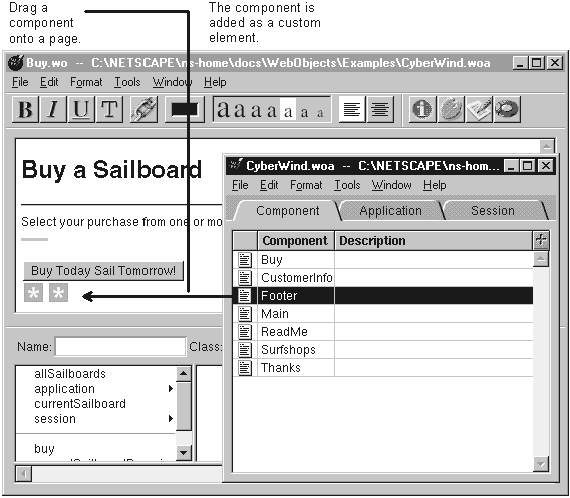

Table of Contents
Table of Contents
 Previous Section
Previous Section
Table of Contents
Previous Section
Place the cursor where you want the component to appear.
Drag the component from an application window.

Dragging a component into the component window adds it to the page as an abstract element. The component looks like a custom element. If you inspect this element, you'll see it has the component's name. You treat the component just like you would any other dynamic element: you must bind to it to be able to interact with it in the script file.
You can drag a component from any application window. If you drag across applications, the component is added to the destination component's application (because WebObjects requires that all components used by an application be in that application's directory.)
To create components that can be reused in this manner, see "Creating Reusable Components."
Tip: If you use a component frequently, store it on a custom palette.
 Next Section
Next Section